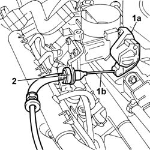
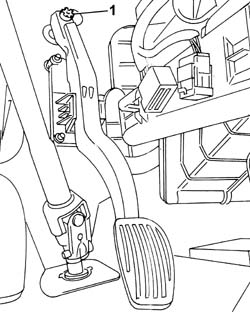

1068A30 accelerator control cable - r + r
- Path
- Procedures > 10 ENGINE UNIT > 1068 ACCELERATOR CONTROLS > 1068A ACCELERATOR PEDAL CONTROL > 1068A30 accelerator control cable - r + r
- Kind
- repair procedure (removal / refitting; the operation number is the code)
- Applies to
- engines: 1.1, 1.2 8v; all production periods
- Interactive page
- https://sloeber94.github.io/elrnDB-fPnd/en/#/2752501
Applies to: engines: 1.1; all production periods
 Removing
Removing
 Refitting
Refitting1048A10 air cleaner filtering element - replace
1. Release the accelerator cable (1b) working on the throttle valve (1a).
2. Disconnect the accelerator cable from the mounting bracket.

Applies to: engines: 1.2 8v; all production periods
Removing
Refitting1048A10 air cleaner filtering element - replace
1. Release the accelerator cable (1b) working on the throttle valve (1a).
2. Disconnect the accelerator cable from the mounting bracket.
Applies to: engines: 1.1; all production periods
1. Disconnect the cable from the accelerator pedal.
Remove the accelerator cable, disconnecting it from the rubber cable duct on the bodyshell and from the mounting bracket.

Applies to: engines: 1.2 8v; all production periods
1. Disconnect the cable from the accelerator pedal.
Remove the accelerator cable, disconnecting it from the rubber cable duct on the bodyshell and from the mounting bracket.
Applies to: engines: 1.1; all production periods
Refitting
RemovingPosition the accelerator cable on the mounting bracket and fit it on the butterfly valve.
Fit the rubber cable duct on the bodyshell and connect it to the accelerator pedal.
Applies to: engines: 1.2 8v; all production periods
Refitting
RemovingPosition the accelerator cable on the mounting bracket and fit it on the butterfly valve.
Fit the rubber cable duct on the bodyshell and connect it to the accelerator pedal.